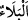

geçerli olduğunu belirtmiştir. Buna göre mânâ: “Attığın zaman sen kendin ile atmadın,
fakat Allah ile attın.” olur. Bu durum tecellî makamında tahakkuk eder.
Allah, kuluna bir sıfatla tecelli edince kulda o sıfata uygun fiiller ortaya çıkar.
Nitekim Allah Teâlâ, İsâ (a.s.)’a ölüleri diriltme sıfatıyla tecelli ettiğinden O’nun
izniyle yani O’nunla ölüleri diriltirdi. Bu durum, “Ben onun kulağı ve gözü olurum.”[13]
kudsî hadîsinde buyurulduğu gibidir. Allah Teâlâ Peygamberimiz (s.a.v.)’e de kudret
sıfatıyla tecelli etmiş, attığı zaman O’nunla atmıştır. O hususta onun eli Allah’ın eliydi.
Nitekim şu âyette bu hakikatin üzerindeki perde kaldırılmış ve şöyle buyurulmuştur:
“Muhakkak sana bey‘at edenler Allah’a bey‘at etmektedirler. Allah’ın eli onların
elleri üzerindedir...” (el-Fetih, 48/10)
Allah Teâlâ “Dâvud, Câlût’u öldürdü.” (el-Bakara, 2/251) âyetinde öldürme fiilini
Dâvud (a.s.)’a isnad etmiştir. Fiili kendisine izâfe edilen bir kul ile fiili Allah Teâlâ’ya
izâfe edilen kul arasında çok fark vardır. Çünkü kul, âfetlerin ve musîbetlerin
mahallidir. Allah ise âfetlerden ve sonradan kendisine bir şey ârız olmasından
münezzehtir.
Hak, «Mâ rameyte iz rameyte» buyurdu
Hakkıın işi, bütün işlere örnektir
Biz bir ok atarsak, atış bizden değildir
Biz yayız, o yayla ok atan Allahıtır
Bir kimse yenilmeyince, bu sırrı anlamaz
Sen o tarafı istersen, koşman gerekir
“Ve bunu müminleri güzel bir imtihanla denemek için” yaptı. Yani zorluklara ve
sıkıntılara göğüs germeden zafer, ganimet ve Hakk’ın âyetlerini müşahede gibi güzel
ihsanları ve büyük nimetleri, Allah Teâlâ kendi katından müminlere bahşetmek için
böyle yaptı.
Yani ne yaptıysa onlara zafer, ganîmet ve büyük ecir ihsân etmek için yaptı. Yoksa
onlara faydası dokunmayacak başka herhangi bir gaye için değil. Ya da âyetin bu kısmı
önceki ifadelerle irtibatlıdır. Yani “…fakat Allah attı.” ve bunu kâfirleri ortadan
kaldırmak ve müminleri denemek için yaptı.
“__WORD__” kelimesi, hem nimet hem de sıkıntılar için kullanılır. Çünkü onun aslı ihtibar,
yani denemek mânâsına gelir. Deneme ise sabrı ortaya çıkarmak için mihnetle, şükrü
ortaya çıkarmak için de nimetle olur. Allah’ın denemesi ise bildiğini bildiği gibi ortaya
koymak mânâsınadır. Yoksa bilmediği bir şeyi öğrenmek değil. Çünkü Allah Teâlâ
böyle şeylerden münezzehtir.
Kâşifî der ki: Hakâyik-ı Sülemî’de İmam Câfer-i Sâdık (r.a.)’tan şöyle nakledilir:
Güzel belâ, onları nefislerinden fânî kılıp fenâdan sonra kendi hüviyetleriyle ebedî
yapan belâdır.
İmam Kuşeyrî şöyle der: Güzel belâ, belâya dûçar olanın belâda maksûdunu